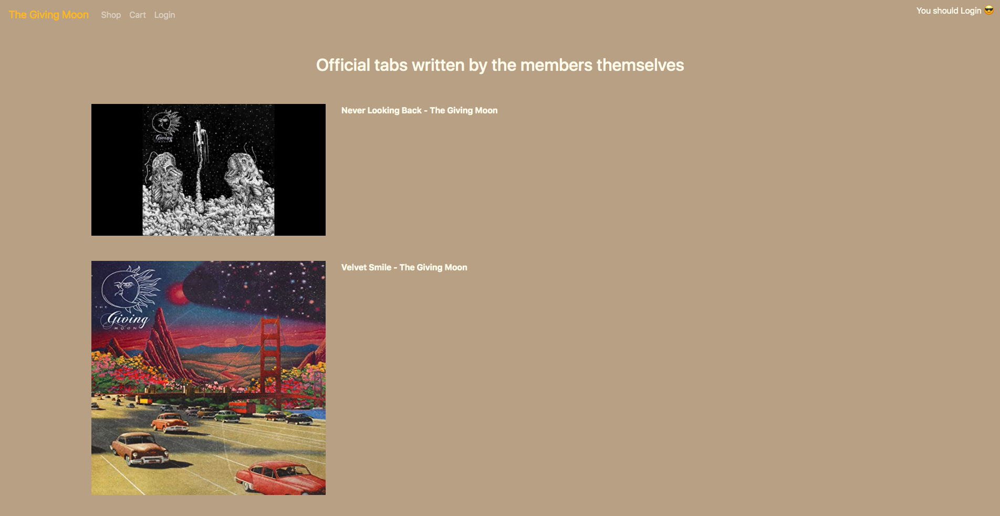
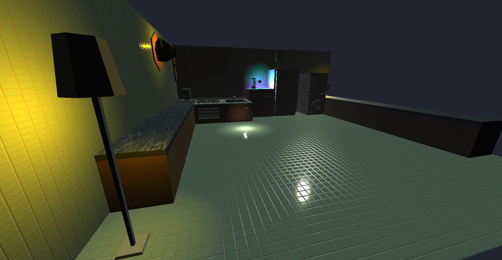
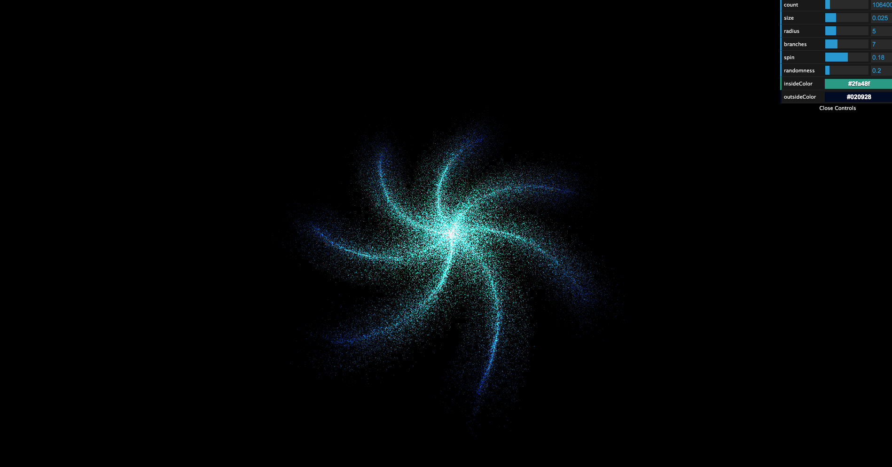
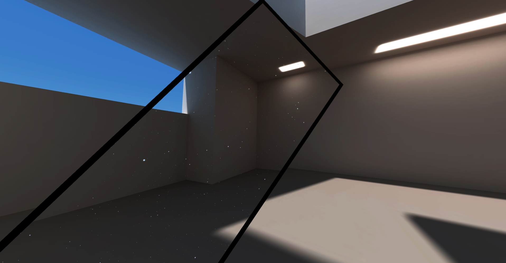
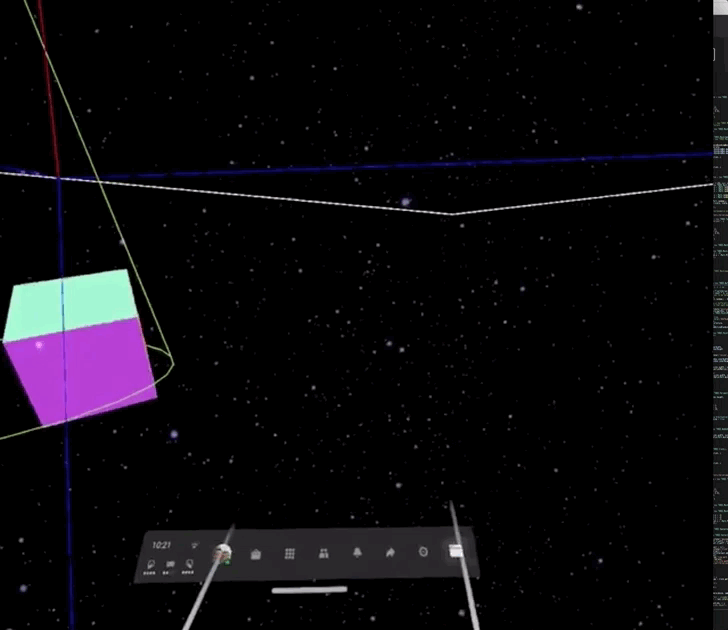
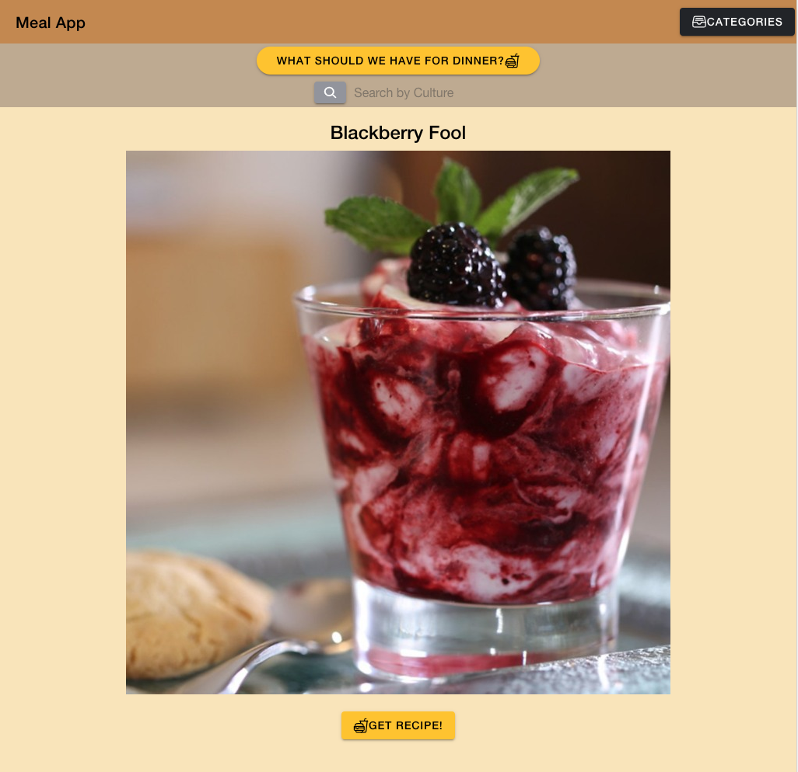
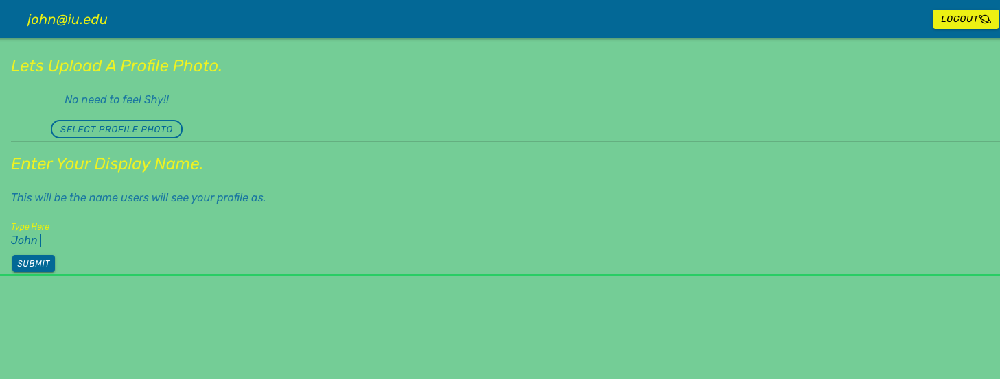

Back
Projects
Loke Skateboarding Spot App
Increased application scalability by:
- completing geoJson data conversion,
- Implemented mapbox spotclustering for over 20,000 skate spots accross
the globe.
- Data filtering allowing for robust search functionality.
- Implemention of an SVG loading indicator animation.
- Search by
address feature.
- GeoLocate users functionality.
- Link spot details pages.

LitTabs
Digital Download Ecommerce application in PHP codeigniter 3.0.
Micro-service: Stripe

Haunted Kitchen
Three.js Application depicting a haunted kitchen scene. Bunder: webpack

Galaxy Generator
Three.js Galaxy prototyping application using dat.gui and three.js
particle systems. dat.gui sliders allow for easy user customizations.
Select size of the particles, add additional branches, change colors and
more. Bunder: webpack

Augmented Reality Star-Field
Generate a starfield in your room. See the power of WebXR on your
Android device through the ARCore technology. This project uses
Three.js, and WebXR to create this expirence. If you would like to view
on a ios device, you may download
The Mozilla WebXR Viewer
and paste the site url. Bunder: webpack

Virtual Reality Star-Field
Own a virtual reality headset? Load the site url in your headset browser
and expirence the immersive starfield expirence though the webXR api.
Three.js, webpack and webXR are used to create this expirence.

Recipe Generator
PWA application - ionic Angular.
Generatates a random recipe from theMealDB API.
 ionFireMap
PWA Application - Ionic Angular
ionFireMap
PWA Application - Ionic Angular
leaflet blog inspired CRUD application. Firebase Authentication along
with firestore nested collections.

ionFireTennis
PWA Application - Ionic Angular
tennis inspired social media application. Firebase Authentication,
Firestore and Firestorage.